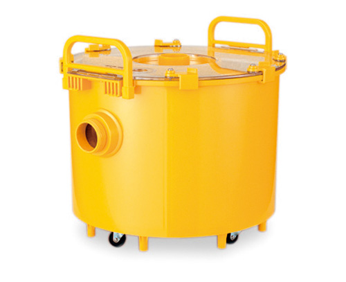
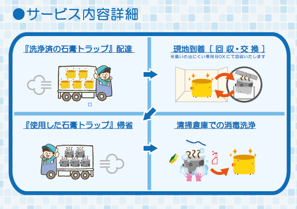
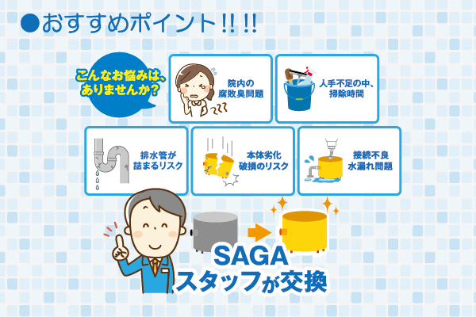
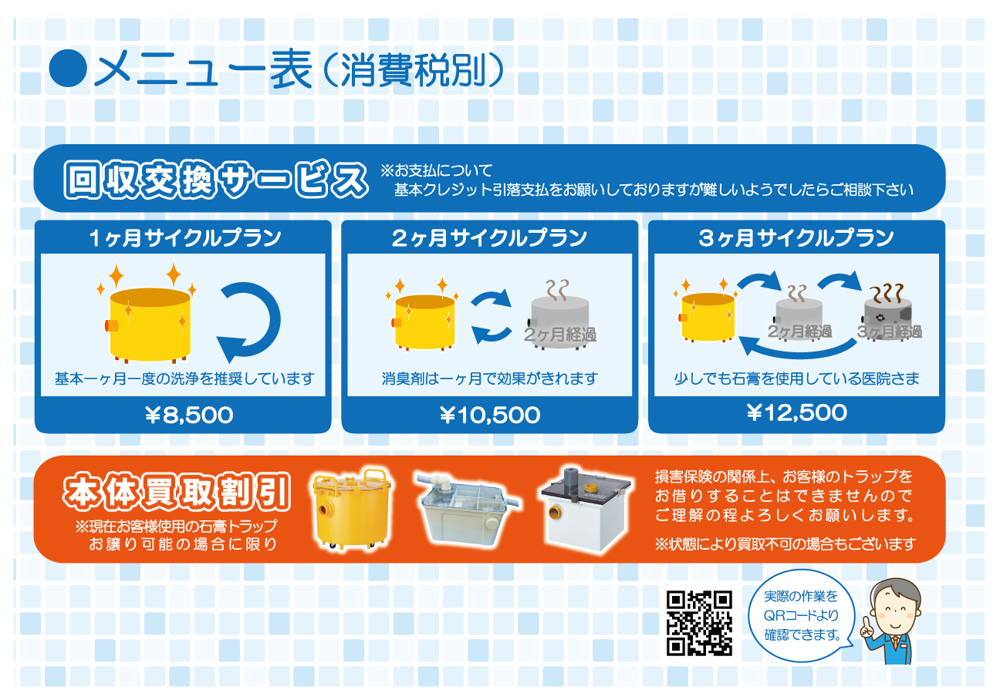
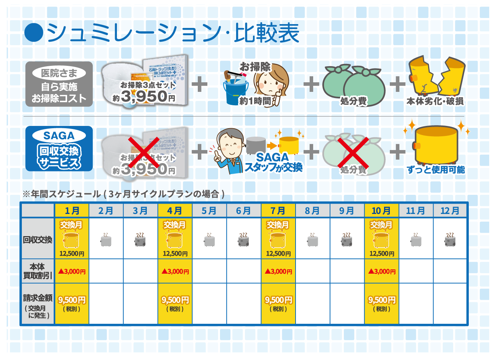

院内の臭いが気になる
汚れや石膏がたまると、臭いの原因になることがあります。
歯科医院・歯科技工所の皆さまへ
汚れた石膏トラップを回収し、洗浄・消毒済みのきれいなトラップへ交換。医院様での面倒な清掃作業を減らす定期回収交換サービスです。

石膏トラップとは？
石膏トラップは、技工作業などで出る石膏や汚れがそのまま排水管へ流れ込むのを防ぐために設置されます。使用を続けると内部に石膏や汚れがたまるため、定期的な清掃や交換が必要です。
SAGAの石膏トラップ回収交換サービス
このサービスは、医院様で石膏トラップを洗浄していただくサービスではありません。SAGAが使用中のトラップを回収し、その場で洗浄済みのトラップに交換します。
面倒な「取り外す・石膏を出す・洗う・消毒する・戻す」という作業を減らせます。
サービス内容をイラストで確認
初めて回収交換サービスを見る方にも、実際に何をするサービスなのか分かるようにまとめています。

こんなお悩みありませんか？
汚れや石膏がたまると、臭いの原因になることがあります。
診療の合間に洗浄するのは、スタッフの負担になりがちです。
石膏や汚れが蓄積すると、排水トラブルにつながることがあります。
本体や接続部の劣化は、破損や水漏れの原因になることがあります。

実際の回収交換の流れ
SAGAで洗浄・準備した、きれいな石膏トラップを医院様へお持ちします。
使用中のトラップを取り外し、洗浄済みのトラップへ交換します。
取り外したトラップは専用BOXで回収し、SAGAが持ち帰ります。
回収したトラップを清掃倉庫で洗浄・消毒し、次回の交換に備えます。
交換サイクル・料金
石膏の使用量や汚れ方に合わせて、交換頻度をご相談いただけます。

基本は1か月ごとの洗浄をおすすめしています。
使用状況に合わせて2か月ごとの交換。
石膏の使用量が少ない医院様向け。
※消費税別。地域・数量・トラップの種類・契約条件などにより異なる場合があります。正式な料金はお見積り時にご案内します。
自院清掃との比較

県外の医院様へ
「今使っているトラップでも対応できる？」「自分の地域でも利用できる？」といったご相談からで大丈夫です。
よくある質問
使用中の汚れた石膏トラップをSAGAが回収し、洗浄・消毒済みのきれいなトラップへ交換するサービスです。回収したトラップは持ち帰り、清掃倉庫で洗浄・消毒します。
回収したトラップはSAGAが持ち帰って洗浄するため、医院様での面倒な洗浄作業を減らせます。
形状・サイズ・設置状況を確認してご案内します。まずは写真をお送りいただくと確認がスムーズです。
1か月・2か月・3か月など、石膏の使用量やトラップの状態に合わせてご相談いただけます。
地域により対応方法が異なります。まずは医院様の所在地と現在のトラップ写真を添えてお問い合わせください。
無料見積り・お問い合わせ
対応できるトラップか分からない場合も、お気軽にご相談ください。交換サイクルや料金についてもご案内します。